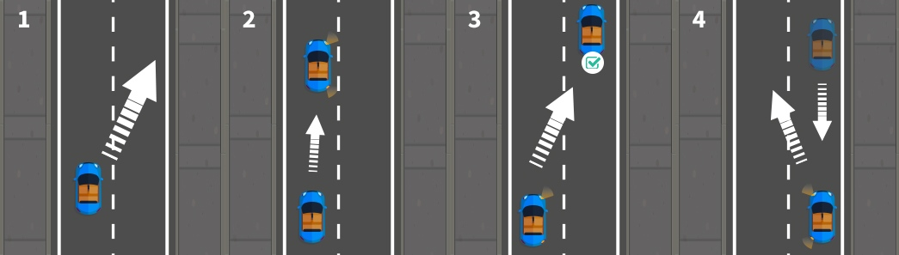
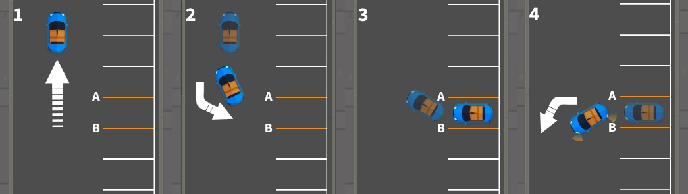
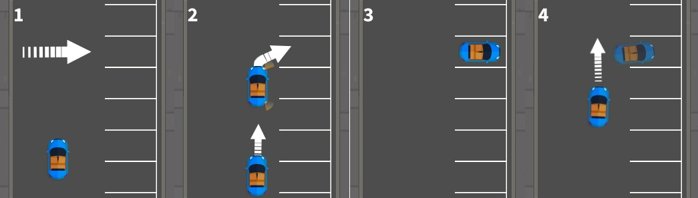
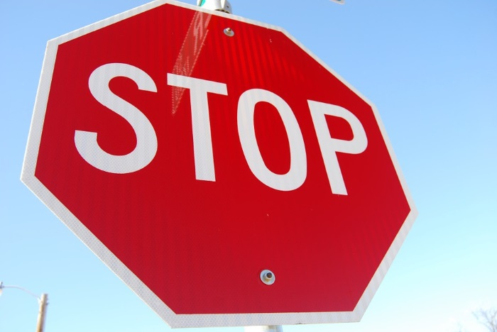

There are Four Manoeuvres to Learn for your Test.
You will be asked to perform one of the following for the examiner:


Pull up on the Right-Hand Side of the Road & Reverse Two Car Lengths
What is it?
The manoeuvre is broken down into three main parts: pulling up on the right, reversing back 2 car lengths and rejoining traffic.
Example instructions
“I’d like you to pull up on the right-hand side of the road when you decide it’s safe to do so. Once you’ve done so, you will need to reverse back for 2 car lengths—keep close to the kerb”.
How to Carry it Out

1. Find a suitable location to pull up.
Try to avoid parking next to driveways, junctions or bends. It’s best to find a spot where you won’t be an obstruction to other road users or have your own view obstructed.
2. MSM and correct positioning
Use your Mirrors, Signal, Manoeuvre routine to safely move towards the right-hand lane. Make sure you check your blindspots carefully before you do anything!
3. Pull up on the right.
Move in to the right at a shallow angle to avoid hitting the kerb. Try to get your vehicle parallel to the kerb to make the next step easier. Stop the car, use your handbrake and select neutral.
4. Reverse and move off. Check your mirrors and blindspots before slowly reversing for 2 car lengths.
4. Reverse and move off. Check your mirrors and blindspots before slowly reversing for 2 car lengths. Keep looking out for any rogue road users! Come to a stop with your handbrake and neutral. Once asked to do so, move off after checking mirrors and blindspots.
Reverse Parallel Park
What is it?
It involves a driver parking their vehicle parallel to the road, usually in a line of other vehicles. In the test, you’ll pull up next to a vehicle in front of your chose parking spot, before reversing into it.
Example instructions
“I’d like you to stop on the left before we reach the next parked car. Then, drive forward and stop next to the car ahead. When you’re ready, reverse into the spot behind the other car and park parallel with the kerb.”
How to Carry it Out

1. Pull alongside the car.
Before you move to stop next to the other vehicle, check your mirrors and blindspots—you don’t want to get in the way of oncoming traffic. Then, stop the car a bit ahead of the other vehicle and select the reverse gear.
2. MSM and correct positioning.
Check your mirrors and blindspots—keeping an eye on the rear window as you start reversing. Line up the rear of your vehicle with the other car’s and come to a stop.
3. Find your reference point and reverse into the spot.
Start to reverse and quickly steer once to the left. Start to look for your next reference point—when the left corner of your vehicle lines up with the right corner of the other vehicle.
4. Full lock and straighten up.
Turn the steering wheel a full lock to the right, all the while doing all-around checks. Straighten up the vehicle, apply the handbrake and select neutral. Move off once you’re told to—do your checks again.
Reverse Bay Parking
What is it?
Reversing in and driving out of a parking bay
Example instructions
“I’d like you to pick a parking bay to reverse into—make sure you’re inside the lines. Once you’ve done so, drive out (left or right) before continuing on.”
How to Carry it Out
1. Pick a bay.
Pick a parking bay that doesn’t have vehicles on either side. Try to position yourself in the centre of the road for extra space. Drive 2 car lengths past your chosen bay.
.
2. Find your point of turn and steer quickly.
Reverse the car until it’s at the point of turn (3rd line from the bay), check it’s clear and steer quickly with a full-lock to the right (or left).
3. Get into the bay and adjust.
Slow and steady does it—keep checking your mirrors and blindspots. You’ll be able to see if you’re inside the lines of the bay by using your side mirrors.
.
4. Finish and move off.
After straightening up, switch to neutral and apply your handbrake. Once you’re good to go, switch to first gear, disengage the handbrake and indicate to the left or right before driving out.
Forward Bay Parking
What is it?
Driving in and reversing out of a parking bay
Example instructions
“I’d like you to pick a parking bay to drive into—make sure you’re inside the lines. Once you’ve done so, reverse out (left or right) before continuing on.”
How to Carry it Out

1. Pick a bay.
Make it easier for yourself and pick a bay on the right. Try to avoid bays that have vehicles on either side—you’ll be able to see the parking lines more clearly that way. Keep things slow and steady.
2. Start to move and find your reference point.
Move over to the left to give yourself plenty of room. Check your mirrors and blindspots as you make your way towards your point of turn.
3. Steer quickly and move at a slow pace.
If the way is completely clear, slowly start to move into the bay with a full right/left lock. Straighten up the vehicle, select neutral and apply your handbrake.
4. Reverse out of the bay.
Select reverse and do all-around checks before reversing to your reference point. Next, half turn to the left (or right) until you’re clear—then switch to first gear, signal, complete your checks and move off.
In Addition to one of the Four Manoeuvres, 33% of People Taking their Driving Test will be Asked to Perform an Emergency Stop :

What is it?
As the name suggests, the emergency stop tests a learner driver’s ability to stop their vehicle quickly—without losing control. Though you should be able to avoid most issues on the road with your carefully honed hazard perception skills and defensive driving techniques, it’s vital that you know what to do in an emergency.
Example instructions
“I will be asking you to carry out an emergency stop soon. I will do this by telling you to “stop” and raising my hand. When you receive this signal, you will need to stop as quickly and safely as you can. You don’t need to worry about looking around—I will make sure it’s safe for you to carry out.”
How to carry it out:
1. Await instructions.
Unlike the driving test manoeuvres, the examiner has to give you a sufficient warning before they ask you to carry out an emergency stop. They’ll get you to pull up and then walk you through the instructions.
2. Take action immediately.
As soon as you receive the relevant verbal and visual cues, you need to take action. Some cars with ABS (Anti-lock Braking Systems) will require you to depress the clutch and brake pedals at the same time. In most cases, however, you will need to brake and then depress the clutch to avoid coasting. If you’re not sure which method to use, ask your instructor for clarification.
3. Observations and move off.
You will need to check all of your mirrors and blindspots before you move off—do so in an anticlockwise motion. Once you’re sure it’s clear, select first gear, disengage the handbrake, signal and move off.
Why it’s relevant
It’s important to prepare for the worst case scenario so that you don’t panic when something bad happens. If there is an emergency and you need to stop your vehicle quickly, e.g., a pedestrian suddenly darts out in front of you, knowing how to carry out an emergency stop could save lives.